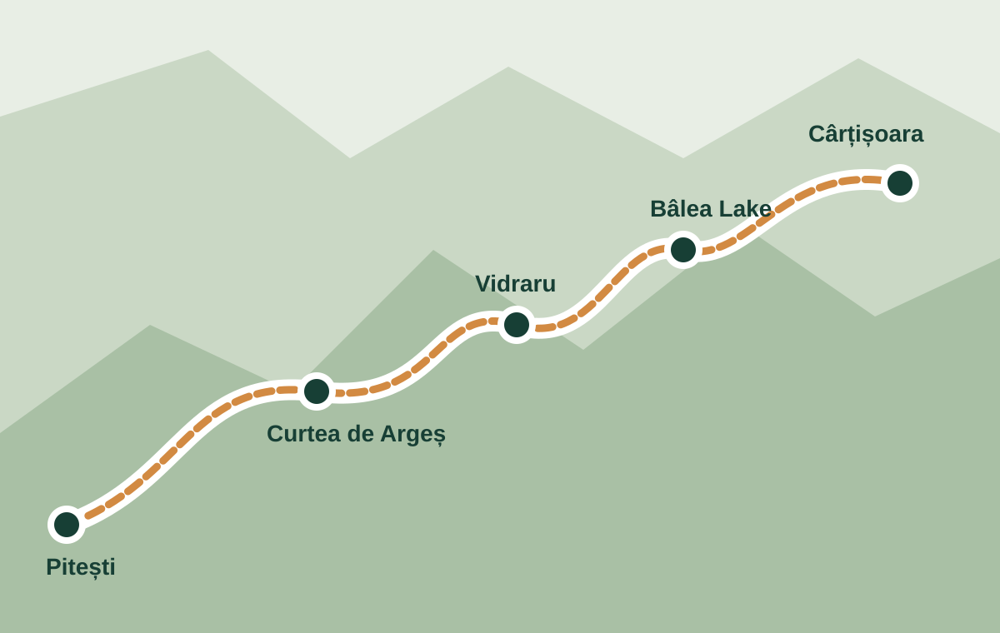

Discover the Carpathians
Visualise Your Journey
Follow the Transfăgărășan from the southern approach through the Făgăraș Mountains and towards Transylvania. Use the route to discover the main attractions and plan where you would like to stop.
South to north
Follow the mountain road
The route below lists the main places in travel order. Distances and journey times can vary with weather, traffic and road restrictions, so check current conditions before departure.
Check safety warnings
Main route stops
- Bascov / Pitești
- Curtea de Argeș
- Poenari Castle
- Vidraru Dam
- Bâlea Waterfall
- Bâlea Lake
- Transfăgărășan Tunnel
- Cârțișoara

Plan with current information
Use an up-to-date map and official road information together. This illustrated page is intended as an overview, not turn-by-turn navigation.